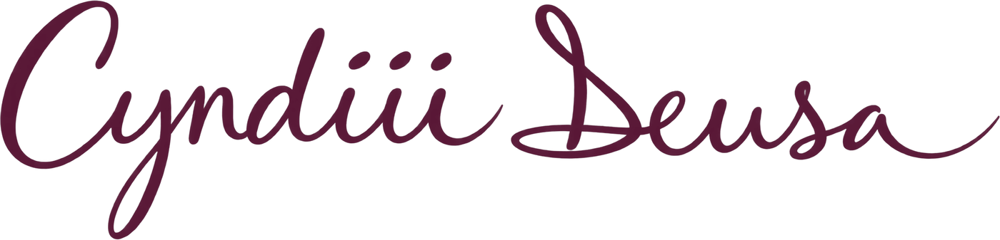

Thee Inner Lens
Thee Inner Lens
Intuitive Poetry
Poesía Intuitiva
Poems written as they arrived — reflections on power, trust & remembering.
Poemas escritos tal como llegaron — reflexiones sobre el poder, la confianza y el recuerdo.
I Am Extremely Loved & Blissed
Words are so powerful, They spell out a whole wave of energy, & could sting the spirit like a bee. But they could also do quite the contrary. Depending on what the mind chooses to perceive. Everything begins in the mind, In which we could fast forward, slow down or even rewind time But then that would show if we are living right here or waiting for the next rhyme Or perhaps anticipating the moment the sun will again shine, Rather than enjoying the cycle that is perfectly aligned. Everything has as much power as we give it, Words could run their course & damage our spirit, Or be utilized as a tool to empower us to surpass any of those projected limits. There could be so much beauty in every word that we say, Just as there is endless beauty showing up in our life each day In multiple ways. But the power in everything comes from that of ourselves, We give power to that in which we choose to dwell & the feeling attached to the words or phrases in that we spell. We could only receive that in which we give our attention to, Just as the sunset is beautiful for those whom view, Someone who stayed inside & missed the time wouldn’t even be aware of the magnificence that the sky left to bliss our eyes & even insides. A beauty full reflection of that of power, The sun doesn’t mind who or what is watching or paying attention, It still shines so bright & serves it’s purpose, leaving us some silent lessons. To perceive through our own intentions, Giving our power away or utilizing it all for our ascension. Trusting in the knowing that even when our sun sets, our warmth still lies inside & could never have truly left. You hold the power in everything, Choose the words & match the feelings that don’t describe anything less Such as, “I Am Extremely Loved & Blissed.”

Creator of Love, To Trust
I used to fuss & fight with the Universe, wanting things to happen on my set clock. & then, I realized that that needed to stop. Because when time fast forwards, I acknowledge that had I gotten what I thought I wanted, It would have left me in a mess & emotionally bruised & short. Things always turn out better when we release any control & let all worries wash away. Accepting that it may not always be rainbows & butterflies & being at peace, still, when bumps show up along the way.. Life comes with many surprises when we choose to step in faith & take responsibility over what we attract into our lives & begin to create our own fate. That doesn’t mean that our life wasn’t already written before on this Earth we came to be, However, based on our choices & perceptions of life, brings along a set of experiences that we ourselves have chosen to breathe. & many of that starts with how we choose to believe. What we choose to absorb. & how much love that lives within us all we choose to embody. & receive. Fighting with the Universe isn’t a lost cause, Because through everything we can learn & grow. from & guide us into a moment of pause. Where we reflect, On what’s working & what’s not so much, What brought you peace, what brought you to fuss. It is all apart of the polarity of life & turning us back into the love that created us. & in that Creator of Love, to trust.
Reflejo de el Espejo
La magia que le siento en el reflejo de los ojos Que me alumbran de ser tanto de brillosos. La sabiduría que me enseñan sin hacer ningún movimiento. La paz que me da entre todo su silencio. El amor que me demuestra que me tranquiliza en el pecho. El arte que le veo de toda la creación. Que vive entre todo por una gran razón. Y que en cada sentido de esta experiencia tiene una solución. Por que nada es mas grande de lo que nos creo. El miedo que me espanta por simplemente ser. Y no pensar mucho en lo que otros ven. Si no solo vivir en el amor que en esta vida se trata de hacer. Me llena de harmonía conectar con esta energía, Lo que uno experiencia ver pasado de la vista. La magia que vive dentro de los ojos. El alma y el espíritu que se siente pasado de los tocos. El reflejo de el espejo, que me refleja todo esto. Por conectar con mi alma que esta dentro de los ojos y es mi maestro. Todo en el reflejo de el espejo.